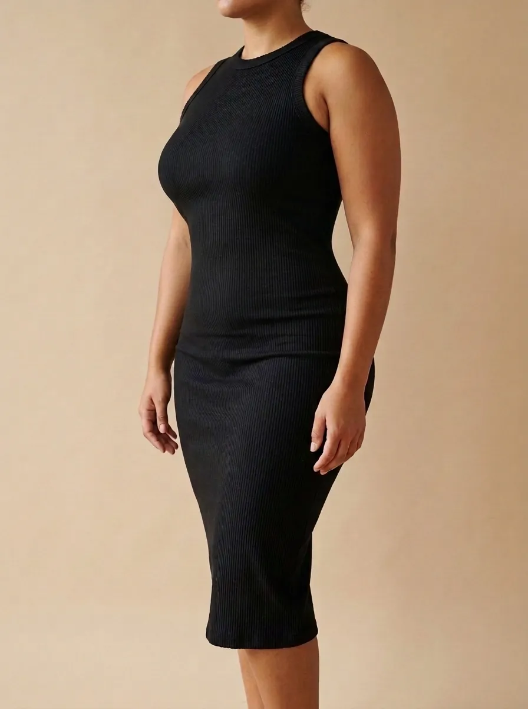
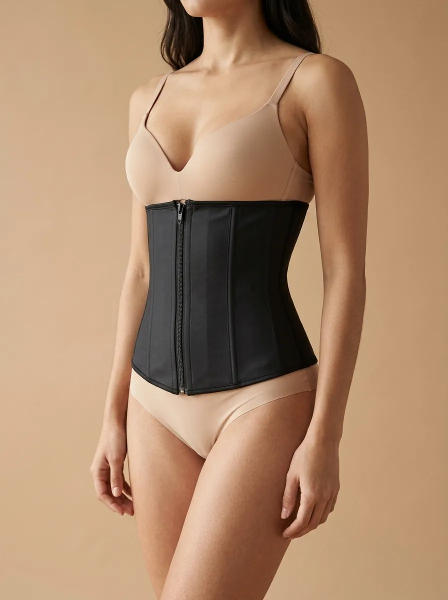
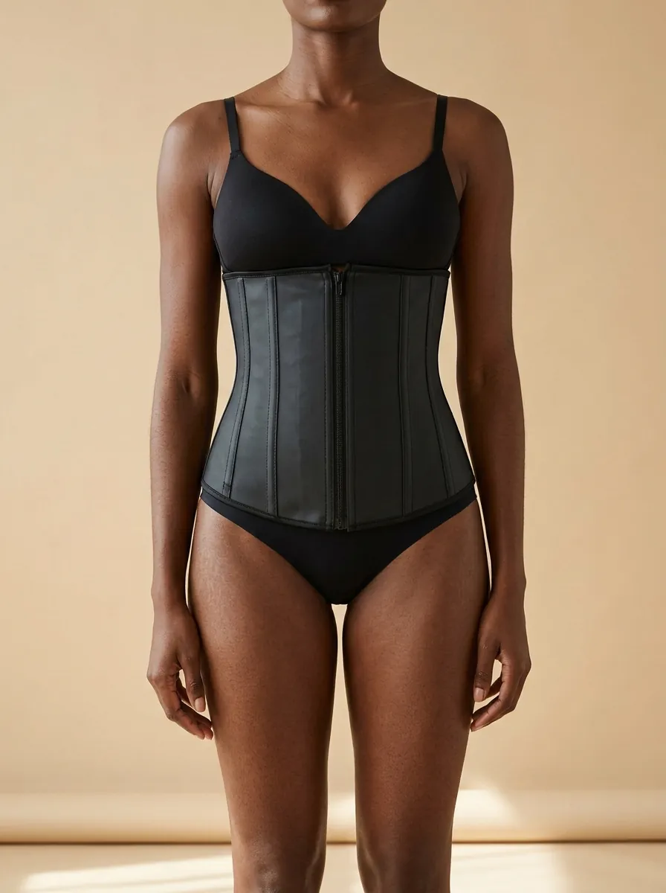
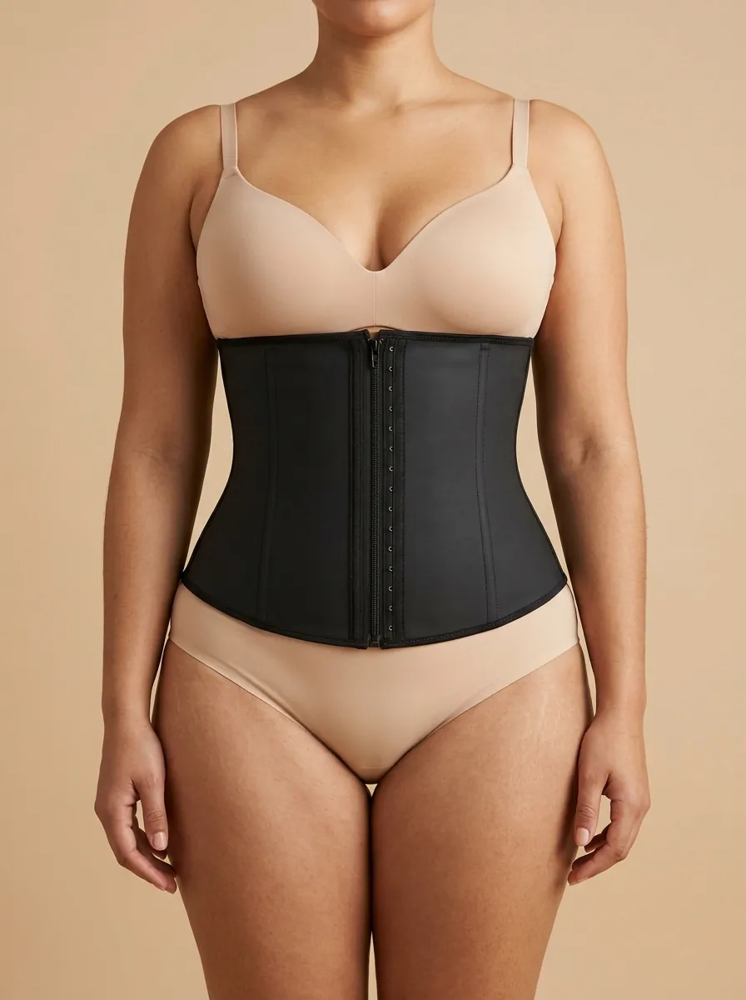
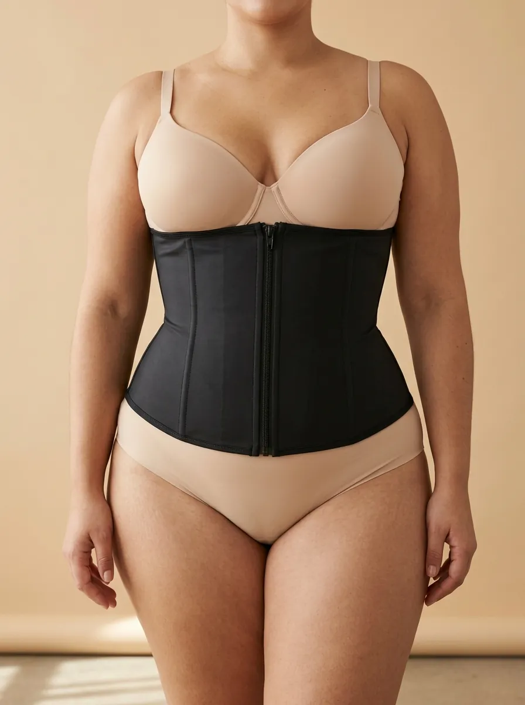
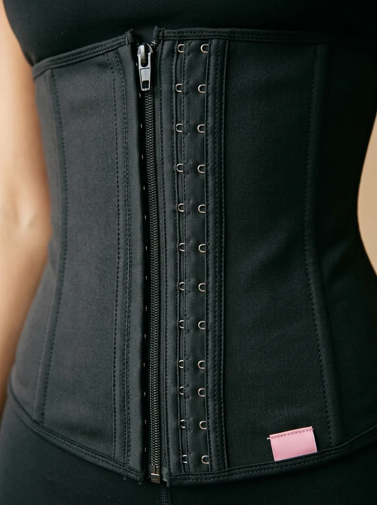

Cintura no lugar. O dia todo.
Cinta de Zíper 30 Barbatanas. Não sobra, não enrola, não machuca.
O que você procura?
Mesmo vestido. Com e sem a cinta.
Arraste a linha e veja a barriga lisinha por baixo da roupa justa.
- Barriga mais lisa na hora
- Cintura mais marcada
- Nada aparece por cima da roupa

Sem cinta Com cintaImagens ilustrativas geradas por IA. O resultado varia de corpo para corpo.
Mais vendidos
Feita para o seu corpo





1 2 3Feita para não enrolar
- 1Zíper frontalVeste e tira sem esforço
- 23 fileiras de colchetesAperta conforme o corpo acostuma
- 330 barbatanas flexíveisSeguram a cinta no lugar o dia todo
“Não sobra, não enrola, não machuca.”
Quero a minhaKits que mais saem
O que as clientes dizem
Espaço para avaliações reais com foto. Os depoimentos abaixo são exemplos.
Antes e depois de clientes reais
Veja os resultados e os vídeos das clientes no Instagram da Paola.
Perguntas frequentes
Como descubro meu tamanho?
Meça a parte mais fina da cintura com fita métrica e compare com a tabela: PP de 58 a 64 cm até EG de 111 a 130 cm. Se ficar entre dois tamanhos, chame a Paola no WhatsApp.
E se eu errar o tamanho?
A primeira troca é por nossa conta. É só chamar a Paola no WhatsApp.
A cinta aperta demais? Dá para sentar?
Ela segura firme sem cortar a respiração, e as 30 barbatanas flexíveis acompanham o corpo: não enrola quando você senta. Se apertar, use a fileira de colchetes mais externa.
Marca na roupa?
Por baixo de blusa, calça e vestido ela fica lisa. Em tecido muito fino, prefira roupas de cor escura.
É minha primeira cinta. Como começo?
Nos primeiros dias, feche na regulagem de colchetes mais externa. Quando o corpo acostumar, passe para a do meio.
Posso usar o gel junto com a cinta?
Pode. Massageie o Gel Pimenta Negra na barriga e vista a cinta em seguida. É o combo que mais sai.
Vocês enviam para todo o Brasil?
Sim. Os pedidos saem do Rio de Janeiro para todo o Brasil.
Quando chega a moda praia?
A coleção está chegando. Entre na lista de espera para ver as peças antes de todo mundo.